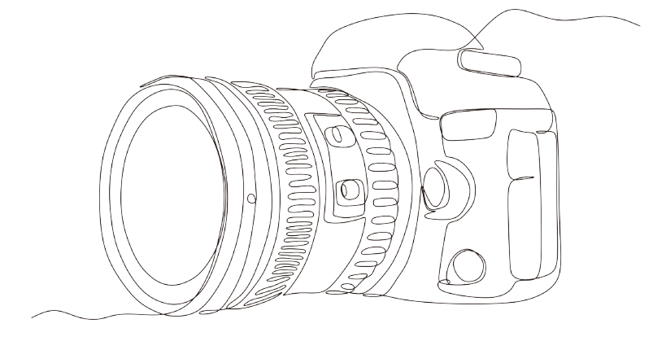
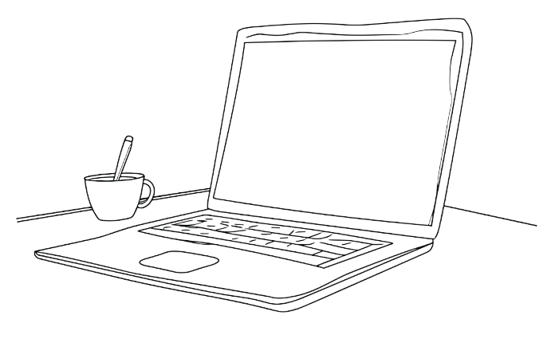

My Story
When I was younger, I wanted to be a singer.
I thought my future career would involve music, theater, and dance.
As I looked at applying for colleges, I was persuaded to pursue a more "stable" career. I have always loved to write: journaling, stories, poems; so I pursued my first bachelor's degree in creative writing. Unfortunately, graduating in 2009 at the height of the US recession left no viable job options in Florida, at least where I was located with my parents.

I had taken an intro to computer science class in college, and I thought writing for websites might be a good option. I took non-credit classes in web design to learn about HTML, which helped me gain a deeper understanding of the web landscape, and gave me confidence to pursue a second bachelor's in information technology. Once I graduated with my IT degree, I started working at the same university where I graduated and stayed for just over 10 years. During my time at the university, I was first employed at the service desk while completing my degree, then promoted to sys admin, and moved into a developer role prior to leaving. Each position and team taught me valuable lessons in various important domains, such as user account management, access control, process management, and security procedures.
I have continued to hone and upgrade my skills and knowledge through both personal education and certificate training. In addition to learning new IT skills, I am always looking for ways to make personal improvements, not just in daily tasks and habits, but in learning to take responsibility and evaluating my life. I still enjoy to sing and write, and I love photography which has been a hobby since I was a kid. In my work, I look for ways to be more efficient, while producing my highest quality work, including researching for new information and knowledge to ensure the best solutions to a problem are found.
This detail-oriented approach made me a great fit for working in the Identity and Access Management space, and I've been able to flourish working in this domain. Since I left the my employment with the university, I have continued to maintain and improve my knowledge of the IAM and security domains, while also acquiring new skills, especially in data management. After taking some personal time off, I am now looking forward to finding my next role, working toward solving important problems, and adapting my skills to meet the new challenges I face.